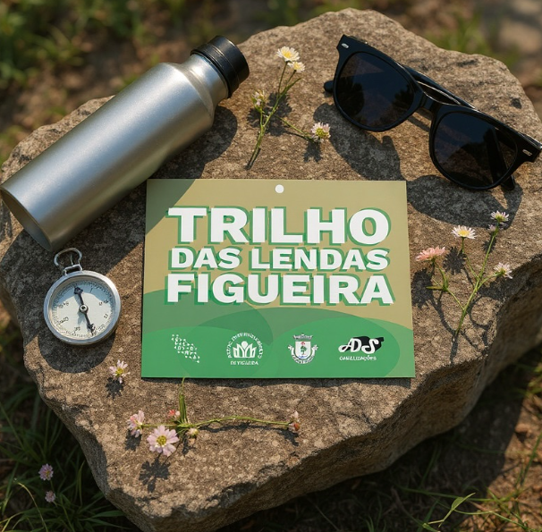

7 de JUNHO, 2026 | 09:00
Trilho Das Lendas
No dia 7 de junho, a Associação GENOMA convida-te a calçar as botas e a descobrir o coração de Figueira. Uma viagem de 12,4 km entre moinhos ancestrais e paisagens únicas.